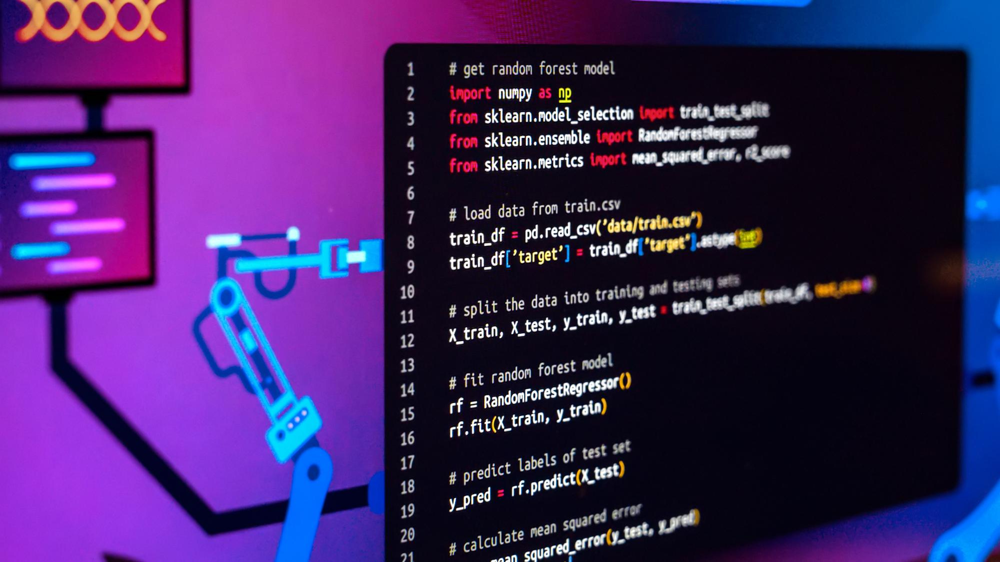

Scripts de Python para usar en Blender
El chatbot presentado es una herramienta útil para generar scripts de Python en Blender, permitiendo a los usuarios automatizar diversas tareas en la plataforma 3D. Este chatbot no solo sirve como una herramienta de aprendizaje, sino que también puede integrarse en flujos de trabajo profesionales para mejorar la productividad y la calidad del trabajo en Blender.
Scripts

Scripts de Automatización
Personalización de Escenas

Integración de complementos
Nuestros servicios
Animaciones
Optimización de Renderizado
Generación Procedural
© [2024] Scrip Python. Todos los derechos reservados.
ScriptPython.com - Pasto - Colombia